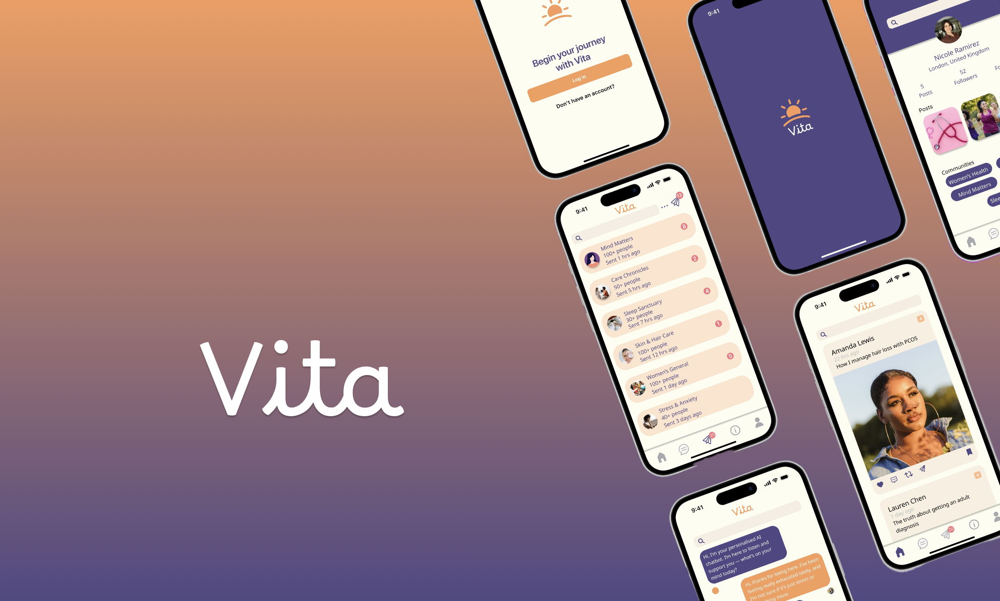

Vita
Amazon University Engagement Program Project
Vita
A women's social media app to create communities to connect about women's health.

Problem
Many women...
Research
To better understand students’ needs and experiences around graduation, I conducted a multi-faceted research approach:
Ideation
Created sketches, tested low-fidelity prototypes, and refined flows based on user feedback...
Solution
Developed a streamlined app that integrates key student services into one hub...